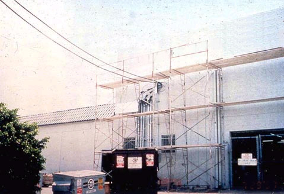

Fabricated frame scaffolds are the most common type of scaffold because they are versatile, economical, and easy to use. They are frequently used in one or two tiers by residential contractors, painters, etc., but their modular frames can also be stacked several stories high for use on large-scale construction jobs. NOTE: Except where indicated, the same basic scaffold requirements that appear in this module also apply to manually propelled, pump jack, ladder jack, tube and coupler, and pole scaffolds, as well as the specialty scaffolds described in Supported Scaffolds. Additional requirements for these scaffolds can be found in their respective modules.
Use this training tool to review the safety requirements for a frame scaffold, in the following phases:
- Base Section
- Support Structure
- Access
- Fall Protection
- Platform
- Keeping Upright
- Electrical Hazards
- Personnel Training and Competent Persons
Base Section
It is impossible for a stable structure to be built upon a foundation that does not start out square and level. OSHA has standards that apply specifically to the steps that must be taken to assure a stable scaffold base.
NOTE: Except where indicated, these requirements also apply to manually propelled, pump jack, ladder jack, tube and coupler, and pole scaffolds, as well as the specialty scaffolds described in the Supported Scaffolds module.

-
In order to assure stability, supported scaffolds must be set on :
- Base plate,
- Mud sills
- Or other adequate firm foundation (Figure 3)
- Footings must be capable of supporting the loaded scaffold without settling or displacement.
- Unstable objects may not be used to support scaffolds or platform units ().
- Front-end loaders and similar pieces of equipment shall not be used to support scaffold platforms unless they have been specifically designed by the manufacturer for such use.
-
Forklifts shall not be used to support scaffold platforms unless :
- The entire platform is attached to the fork.
- The forklift is not moved horizontally while the platform is occupied.
Tip: One way to ensure a stable foundation, when a sill is used, is to secure it to the baseplate (Figure 2).
-

Figure 1. Poor foundation: Scaffold end frames, which have no base plates, erected on top of scrap wood and unstable cement blocks.
-

Figure 2. Proper foundation on wood sills: Scaffold end frames equipped with adjustable screw legs and with base plates set on mud (wood) sills.
Scaffold Collapses, Worker Injured
Case Report:
- An employee was on a scaffold that was being dismantled when the scaffold collapsed. He fell, sustaining a concussion for which he was hospitalized. The scaffold was not secured to wooden footing supports, nor was it tied to the building.
Figure 3. Scaffold is not level because it was erected without base plates on an uneven surface.
Supported scaffold poles, frames, uprights, etc. must be plumb and braced to prevent swaying and displacement. In general, a level is the easiest way to achieve the desired right angles.
Support Structure
To control the risk of a scaffold falling or collapsing, employers must assure that scaffolds are built within OSHA standards relating to strength and structural integrity.
NOTE: Except where indicated, these requirements also apply to manually propelled, pump jack, ladder jack, tube and coupler, and pole scaffolds, as well as the specialty scaffolds described in the Supported Scaffolds module.
Figure 4. When scaffold frames are interconnected, failure of one frame can cause the whole system to collapse.
- Scaffolds and scaffold components must be capable of supporting, without failure, their own weight and at least 4 times their maximum intended load. (Figure 4)
- Scaffolds shall be altered only under the supervision and direction of a competent person.
Tip: A scaffold can be overloaded by removing the braces, which causes the weight on the scaffold to be distributed to fewer structural members. Even if they are "in the way," braces should not be removed while work is being performed on a scaffold!
Worker Falls from Collapsing Scaffold
Case Report:
- A worker was standing on a scaffold 6' high, measuring windows for covers to be installed later. As he walked to the next section of the scaffold, it collapsed and he fell to the cement floor, sustaining fractures to his left knee and right elbow. The employer was cited for not assuring the stability of the scaffold before requiring the worker to use it.

Figure 5. Poor attempt at securing cross bracing with wire.
- Frames and panels must be connected by cross, horizontal, or diagonal braces, alone or in combination, which secure vertical members together laterally.
- As frames are stacked, cross braces must be of such length as will automatically keep the scaffold plumb, level, and square.
- All brace connections must be secured to prevent dislodging. (Figure 5)
Tip: A level may be used frequently during assembly to guarantee that new structural components remain in line.
- Frames and panels must be joined together vertically by coupling or stacking pins or equivalent means.
- Frames and panels must be locked together to prevent uplift, where uplift can occur. Uplift is the separation of a frame from the frame below it.
Tip: Separation of frames can occur in high winds (uplift), or when workers climb endframes, overload the platform, or strike the scaffold with tools, materials, etc.
Improper Coupling Results in Two Deaths
Case Report:
- A tubular, welded-frame scaffold, 31 feet high, was erected to paint a 33-foot high sign at the entrance of a new shopping mall. After the sign had been partially painted, the scaffold was moved to allow concrete to be placed around the sign. Several days later, a crew of seven workers was instructed to replace the scaffold and finish painting the sign. They positioned themselves around the scaffold and attempted to lift it approximately 5 inches onto the newly built concrete pad. As they were lifting the scaffold, the top section partially separated from the adjoining section, toppled over, and contacted a power line. A 28-year old carpenter and a 31-year old laborer were electrocuted. The other five workers were hospitalized with electrical burns.
- Scaffold components manufactured by different manufacturers must not be intermixed, unless they fit together without being forced and the scaffold's structural integrity is maintained.
- Scaffold components manufactured by different manufacturers are not allowed to be modified to make them fit together, unless a competent person determines that the resulting scaffold is structurally sound.
- Scaffold components made of dissimilar metals must not be used together unless a competent person has determined that galvanic action will not reduce the strength of any component below OSHA standards.
Access

Workers are most vulnerable to fall hazards when climbing on or off a scaffold. Therefore, employers are required to provide safe scaffold access. Erectors and dismantlers face additional access problems due to the incomplete condition of the scaffolding. Requirements to prevent falls that apply only to these workers are addressed separately below.
NOTE: Except where indicated, these requirements also apply to manually propelled, pump jack, ladder jack, tube and coupler, and pole scaffolds, as well as the specialty scaffolds described in the Supported Scaffolds module.
- Employees must be able to safely access any level of a scaffold that is 2 feet above or below an access point.
- OSHA standards specifically forbid climbing cross-braces as a means of access.
Improper Access Leads to Serious Injuries
Case Report:
- The victim was climbing the end-frame of a three-tiered metal scaffold when a midrail pulled loose. He fell approximately 12 feet to a concrete dock. He suffered multiple fractures to the head, left and right foot, and left wrist, and torn ligaments in the knees.
Figure 6. Example of a frame scaffold with portable ladder for access. Could it tip the scaffold?
- Portable, hook-on, and attachable ladders must be positioned so as not to tip the scaffold. (Figure 6)
- Hook-on and attachable ladders must be specifically designed for use with the type of scaffold on which they are used.
-
Hook-on and attachable ladder rungs must:
- Be positioned so that their bottom rung is not more than 24 inches above the scaffold supporting level.
- Have uniform spacing between rungs of a maximum 16¾ inches.
- Have minimum rung length of 11½ inches.
- Have rest platforms provided at a maximum of 35-foot vertical intervals.
-
Stairway-type ladders must:
- Be positioned so that their bottom step is not more than 24 inches above the scaffold supporting level,
- Have rest platforms at maximum vertical intervals of 12 feet,
- Have a minimum step width of 16 inches, except for mobile scaffold stairway-type ladders, which shall have a minimum step width of 11½ inches , and
- Have slip-resistant treads on all steps and landings.
- Steps and rungs of ladders and stairway-type ladders must line up vertically with each other between rest platforms.

Figure 7. Stair tower with stair rail, including toprail and midrail.
Integral (built-in) scaffold access frames must:
- Be specifically designed and constructed for use as ladder rungs.
- Not be used as work platforms when rungs are less than 11½ inches in length, unless each affected employee uses appropriate fall protection.
- Have rungs which are uniformly spaced and a length of at least 8 inches, with a maximum space between rungs of 16¾ inches.
- Have rest platforms provided at a maximum of 35 foot vertical intervals.
Stair towers (scaffold stairway/towers) must have (Figure 7):
- A stair rail consisting of a toprail and a midrail on each side of the stairway.
- A toprail of each stair rail system capable of serving as a handrail, unless a separate handrail is provided.
- Sufficient handhold on handrails, and toprails serving as handrails, for employees grasping them to avoid falling.
- Stair rails and handrails surfaced to prevent punctures or lacerations to employees, and to prevent snagging of clothing.
- Ends of stair rails and handrails constructed so that they do not constitute a projection hazard.
- A space of at least 3 inches between handrails, or stair rails used as handrails, and other objects.
- A distance of no less than 28 inches and no more than 37 inches from the upper surface of the stair rail to the forward edge of the tread, in line with the face of the riser.
- A landing platform at least 18 inches wide by 18 inches long at each level.
- A scaffold stairway width of at least 18 inches between stair rails.
- Slip-resistant surfaces on treads and landings.
- Stairways installed between 40 degrees and 60 degrees from the horizontal.
- Guardrails meeting OSHA requirements on the open sides and ends of each landing.
- Uniform riser height, within ¼-inch, for each flight of stairs. Greater variations in riser height are allowed for the top and bottom steps of the entire system (not for each flight of stairs).
- Uniform tread depth, within ¼-inch, for each flight of stairs.
- Ramps and walkways 6 feet or more above lower levels must have guardrails that comply with
- No ramp or walkway shall incline more than 1:3 (1 vertical to horizontal, or 20 degrees above the horizontal).
- If a ramp or walkway has a slope of more than 1:8, it must have cleats securely fastened to the planks not more than 14 inches apart, to provide footing.

Figure 8. Example of direct access.
Direct access to or from another surface is permitted only when the scaffold is not more than 14 inches horizontally and not more than 24 inches vertically from the other surface.

Figure 9. Install ladder as soon as possible during scaffold erection.
- Employers are required to provide safe access for employees erecting or dismantling supported scaffolds where it is feasible, and where it does not create a greater hazard.
- Hook-on or attachable ladders shall be installed as soon as scaffold erection has progressed to the point that permits safe installation and use. (Figure 9)
-
When erecting and dismantling tubular, welded-frame scaffolds, end frames may be used as climbing devices for access, provided that :
- Horizontal members are parallel, level, and not more than 22 vertical inches apart.
- They are erected in a manner that creates a usable ladder and provides good hand hold and foot space.
- Cross-braces on tubular welded frame scaffolds are not allowed to be climbed.
The competent person is responsible for determining the safety and feasibility of installing and using safe means of access, based on site conditions and the type of scaffold involved.
Fall Protection
The number one scaffold hazard is worker falls. Fall protection consists of either personal fall-arrest systems or guardrail systems, and must be provided on any scaffold 10 feet or more above a lower level. Specific requirements are described below.
NOTE: Except where indicated, these requirements also apply to manually propelled, pump jack, ladder jack, tube and coupler, and pole scaffolds, as well as the specialty scaffolds described in the Supported Scaffolds module.
- Each employee on a scaffold more than 10 feet above a lower level must be protected from falling to that lower level.
- Fall protection consists of either personal fall arrest systems or guardrail systems meeting OSHA requirements.
- Employees performing overhand bricklaying operations from a supported scaffold must be protected from falling from all open sides and ends of the scaffold, except at the side next to the wall being laid.

Figure 10. An example of a lanyard attached to a vertical lifeline. Note that the worker is wearing a safety belt, whereas the new standard requires a full body harness.
- In addition to meeting the requirements of, personal fall-arrest systems used on scaffolds are to be attached by lanyard to a vertical lifeline, horizontal lifeline, or scaffold structural member.
- When vertical lifelines are used, they must be fastened to a fixed safe point of anchorage, independent of the scaffold, and be protected from sharp edges and abrasion. Safe points of anchorage include structural members of buildings, but not standpipes, vents, electrical conduit, etc., which may give way under the force of a fall.
- It is dangerous and therefore impermissible for two or more vertical lifelines to be attached to each other, or to the same point of anchorage.
- When horizontal lifelines are used, they are to be secured to two or more structural members of the scaffold.
- Guardrail systems must be installed along all open sides and ends of platforms, and must be in place before the scaffold is released for use by employees other than erection/dismantling crews.
- Walkways located within a scaffold must have guardrail systems installed within 9½ inches of and along at least one side of the walkway.
-
Each toprail or equivalent member of a guardrail system must be able to withstand a force of at least 200 pounds applied in any downward or horizontal direction, at any point along its top edge.
- The top edge height of toprails on supported scaffolds must be between 36 inches and 45 inches.
- When conditions warrant, the height of the top edge may exceed the 45-inch height, provided the guardrail system meets all other criteria. (NOTE: The minimum top edge height on scaffolds manufactured or placed in service after January 1, 2000 is 38 inches).
-
Midrails, screens, mesh, intermediate vertical members, solid panels, etc., must be able to withstand a force of at least 150 pounds applied in any downward or horizontal direction, at any point along the midrail or other member.
- When midrails are used, they must be installed at a height approximately midway between the top edge of the guardrail system and the platform surface.
- When screens and mesh are used, they must extend from the top edge of the guardrail system to the scaffold platform, and along the entire opening between the supports.
- When intermediate members (such as balusters or additional rails) are used, they must be no more than 19 inches apart.
- Guardrails must be surfaced to prevent punctures or lacerations to employees and to prevent snagging of clothing, which may cause employees to lose their balance.
- Ends of rails may not extend beyond their terminal posts, unless they do not constitute a projection hazard to employees.
-
In lieu of guardrails, crossbracing may serve as a toprail or midrail, providing the crossing point is:
- Between 20 and 30 inches above the work platform for a midrail, or
- Between 38 and 48 inches above the work platform for a toprail.
-
![Figure 11. Obvious violation: No guardrail and no fall-arrest system. Also, because scaffold is six tiers high, it must be tied in to the building. [1926.451(c)(1)]](slide70.jpg)
Figure 11. Obvious violation: No guardrail and no fall-arrest system. Also, because scaffold is six tiers high, it must be tied in to the building.
-

Figure 12. Violation: Scaffold has X-brace at a height that should be verified as meeting the requirements to act as a top rail, and a midrail and toe boards are still required as these workers are not wearing fall protection. There is a mortarboard on the cantilevered platform, in possible violation of
Employee is Pulled off Scaffold, Suffers Injuries. Guardrails May Have Saved Him
Case Report:
- While sitting or kneeling on a fixed deck plank attached to a fabricated frame scaffold, a worker was pulling a 16-foot long 2x4 off the bucket of an excavator. There were no guardrails at the working level. When the other end of the 2x4 slipped off the bucket, the employee did not let go of his end, and was pulled off the deck. He fell 16 feet to the ground, sustaining facial fractures and other injuries.
Employers are required to provide fall protection for employees erecting or dismantling supported scaffolds where it is feasible, and where installing and using it does not create a greater hazard.
The employer must designate a competent person, who would be responsible for determining the feasibility and safety of providing fall protection for employees erecting or dismantling supported scaffolds.
Platform

Except when used only as a walkway, the platform is the work area of the scaffold. Therefore, an inspection of a scaffold platform requires safety checks of both the platform structure and how the platform is used by the workers.
NOTE: Except where indicated, these requirements also apply to manually propelled, pump jack, ladder jack, tube and coupler, and pole scaffolds, as well as the specialty scaffolds described in the Supported Scaffolds module.

Figure 13. Example of a scaffold that is not fully planked. Also planks are not cleated or otherwise secured against displacement. There is also more than a 14-inch gap between the building and the scaffold platform, no guardrails, and no toeboards. A smorgasbord of violations...you pick 'em!
- Each platform must be fully planked or decked between the front uprights and the guardrail supports (see Figure 13 and Figures 14 & 15).
- Platforms used solely as walkways, or during erection or dismantling, require only the planking that the employer establishes is necessary to provide safe working conditions.
- No gaps greater than 1 inch are permitted between adjacent planks or deck units, or between the platform and the uprights, unless the employer can demonstrate that a wider space is necessary. In such cases, the gap will be as small as possible and not exceed 9½ inches.
- Wooden planking must not be covered with opaque finishes, except that platform edges may be marked for identification. Platforms may be coated periodically with wood preservatives, fire retardants, and slip-resistant finishes, provided they do not obscure the top or bottom wood surfaces.
- Scaffold platforms and walkways must be at least 18 inches wide, unless they are used in areas that the employer can demonstrate are so narrow that they must be less than 18 inches wide. In such cases, the platforms must be as wide as feasible, and fall protection must be provided.
- Nothing that could cause a slip, trip or fall (i.e. tools, scrap material, chemicals, snow, ice, etc.) is allowed to accumulate on the platform.
- When moving platforms to the next level, the existing platform must be left undisturbed until the new end frames have been set in place and braced.
Tip: For the same reason, cleats or other means of connecting planks should be on the underside.
- To prevent slippage, platforms must be cleated or otherwise restrained at each end, or else overlap their support at least 6 inches ().
- Unless it is designed and installed to support employees and materials without tipping, or has guardrails that block employee access, each end of a platform may not extend over its support more than 12 inches (for platforms 10 feet or shorter in length) or more than 18 inches (for platforms more than 10 feet long).
- On scaffolds where platforms are overlapped to create a long platform, the overlap may only occur over supports, and may not be less than 12 inches, unless the platforms are restrained (i.e., nailed together) to prevent movement.
- On scaffolds where platforms are abutted to create a long platform, each abutted end must rest on a separate support surface (this does not preclude the use of shared support members such as "T" sections, hook-on platforms that rest on common supports, etc.).
- When platforms must overlap because a scaffold changes direction, such as turning a corner, platforms that rest on a bearer at an angle other than a right angle shall be laid first, and platforms that rest at right angles over the same bearer shall be laid second, on top of the first platform.
Improper Access Leads to Serious Injuries
Case Report:
- The victim was climbing the end-frame of a three-tiered metal scaffold when a midrail pulled loose. He fell approximately 12 feet to a concrete dock. He suffered multiple fractures to the head, left and right foot, and left wrist, and torn ligaments in the knees.
When brackets are used to support cantilevered platforms, they must:
- Be seated with side-brackets parallel to the frames, and end-brackets at 90 degrees to the frames.
- Be used only to support personnel, unless the scaffold has been designed for other loads by a qualified engineer and built to withstand the tipping forces caused by other loads.
- Scaffold platforms must be able to support their own weight, plus four times the maximum intended load.
-
Do not load the scaffold or any component parts beyond their maximum capacity (their own weight and 4:1 the maximum intended load). A scaffold can be overloaded by :
- Too many people being on the platform.
- Too much material being stored on the platform.
- Point loading, or concentrating too much of the load in one area. (Figures 14 & 15)


Figures 14 & 15. Planking on this platform should be six planks wide, instead of only two. Also, note that the planks are bowing because the bricks are loaded at one point on the platform instead of being evenly distributed.
There are two kinds of falling object hazards associated with scaffolds. One concerns the employees on the scaffold itself, and the other concerns employees who may work in or enter the area below the scaffold.
-
Each employee on a scaffold must be protected from falling hand tools, debris, and other small objects, by :
- Hardhats
- Toeboards, screens, or guardrail systems
- Debris nets or canopy structures that contain or deflect falling objects.
- Placement of potential falling objects away from the edge of the surface from which they may fall when the falling objects are too large, heavy or massive to be contained or deflected by any of the above-listed measures.
-
Where there is a danger of tools, materials, or equipment falling from a scaffold onto employees below, they must be protected by :
- The area below the scaffold being barricaded so employees are not permitted to enter.
- Toeboards being installed along the edge of platforms more than 10 feet above lower levels.
- Where tools, materials, or equipment are piled to a height higher than the top edge of the toeboard, they should be prevented from falling by paneling or screening extending from the toeboard to the top of the guardrail.
- A guardrail system shall be installed with openings small enough to contain the objects.
- Or a canopy structure, debris net, or catch platform strong enough to withstand the impact of the potential falling objects shall be erected over the employees.
-
When toeboards are used for falling object protection, they must be :
- Able to withstand a force of at least 50 pounds applied in any downward or horizontal direction, at any point along the toeboard.
- At least 3½ inches high from the top edge to the level of the walking/working surface.
- Securely fastened in place at the outermost edge of the platform, and not have more than ¼-inch clearance above the walking/working surface.
- Solid, or with openings not over 1 inch.
Keep Upright
Once a scaffold is built, even if it is compliant with every other standard relating to footings, structure, capacity, etc., it still will not provide a safe work platform if it does not remain upright. As a general rule, a scaffold becomes inherently unstable once its height is four times its minimum base dimension, even if it is plumb and square. Extreme weather or damage to structural components can also affect a scaffold's stability.
NOTE: Except where indicated, these requirements also apply to manually propelled, pump jack, ladder jack, tube and coupler, and pole scaffolds, as well as the specialty scaffolds described in the Supported Scaffolds module.
Figure 16. Good example of a scaffold braced into a building.
When a supported scaffold reaches a height that is more than four times its minimum base dimension (4:1), it must be restrained by guys, ties, or braces to prevent it from tipping.
- Guys, ties, and braces must be installed at locations where horizontal scaffold components support both inner and outer legs.
- Guys, ties, and braces must be installed according to the scaffold manufacturer's recommendations or at the closest horizontal member to the 4:1 height ratio and be repeated every 20 vertical feet for narrow scaffolds (3 feet or less in width), and every 26 vertical feet for scaffolds greater than 3 feet in width.
- Ties, guys, braces, or outriggers shall be used to prevent tipping of supported scaffolds bearing eccentric loads, such as cantilevered work platforms.
- Scaffolds and scaffold components must be inspected for visible defects before each shift by a competent person, and after each occurrence that could affect a scaffold's integrity (such as being struck by a crane).
- Any part of a scaffold that has been damaged or weakened so that it no longer meets OSHA strength requirements must either be repaired, replaced, braced, or removed from service.
Scaffolds may not be moved horizontally while employees are on them, unless they have been designed for that purpose by a registered professional engineer, or in the case of mobile scaffolds, .
Employees are not permitted to work on or from a scaffold during storms or high wind, unless a competent person has determined that it is safe, and those employees are protected by :
- Personal fall arrest systems.
- Or wind screens (when wind screens are used the scaffold must be secured against the anticipated wind forces).
Electrical Hazards

Because they may be built in proximity to overhead power lines, and because they are often made of metal, scaffolds can put workers at risk of electrocution. This risk can be removed through proper clearance and maintenance.
NOTE: Except where indicated, these requirements also apply to manually propelled, pump jack, ladder jack, tube and coupler, and pole scaffolds, as well as the specialty scaffolds described in the Supported Scaffolds module.
-
Scaffolds must not be close enough to overhead power lines that they, or any conductive materials (e.g. building materials, paint roller extensions, scaffold components) that may be handled on them, come closer than 10 feet to the power line. (Figure 18)
- Exception: Insulated power lines of less than 300 volts have a safe distance of only 3 feet.
-
Scaffolds may be closer to overhead power lines than specified below if such proximity is necessary for the type of work being done, and if the power company or electrical system operator has been notified and has either :
- De-energized the lines (Figure 17).
- Relocated the lines.
- Installed protective coverings to prevent accidental contact with the lines.
Tip: Because it may be difficult to determine if a power line is insulated, or what its exact voltage is, the 10 foot rule should always be applied.
-

Figure 17. Example of powerlines that have been grounded.
-

Figure 18. Example of scaffold being built dangerously close to power lines.
Because metal frame scaffolds are conductive, power tools, cords, etc., that suffer insulation failure can electrify the entire scaffold. This poses a risk of electrocution not just to the worker holding the tool, but to everyone who contacts the scaffold. Therefore, all portable electric equipment must be protected by:
- GFCIs (ground-fault circuit interrupters)
- Or an AEGCP (assured equipment grounding conductor program, in accordance with
Tip: Often, a worker who is shocked survives the current, only to lose balance and be killed in a fall. This is one more reason for always using fall protection.
Personnel Training and Competent Persons

Critical to scaffolding safety are the use of competent persons for the design, erection/dismantling, and maintenance of scaffolds, and trained workers for their use. Therefore, assessing personnel abilities should be a part of all phases of the scaffolding inspection.
NOTE: Except where indicated, these requirements also apply to manually propelled, pump jack, ladder jack, tube and coupler, and pole scaffolds as well as the specialty scaffolds described in the Supported Scaffolds module.
Figure 19. Scaffold that was not constructed and loaded in accordance with design.
- Scaffolds must be designed by a qualified person, and be constructed and loaded in accordance with that design (Figure 19).
- Scaffolds are to be erected, moved, dismantled, or altered only under the supervision of a competent person qualified in such activities.
- Scaffolds over 125 feet (38.0m) in height above their base plates shall be designed by a registered professional engineer, and shall be constructed and loaded in accordance with such design.
- Non-mandatory examples of criteria that will enable an employer to comply with
- Scaffolds are to be erected, moved, dismantled, or altered only by experienced and trained employees who have been selected for that work by the competent person.
-
Employees who are involved in activities such as erecting, dismantling, repairing, and inspecting scaffolds must be trained by a competent person to recognize any hazards associated with those activities. Training shall include :
- The nature of scaffold hazards.
- Correct procedures for erecting, disassembling, etc. the type of scaffold in question.
- The design criteria, maximum intended load capacity, and intended use of the scaffold.
- Any other pertinent requirements.
-
Employees who perform work while on a scaffold must be trained by a qualified person to recognize the hazards associated with the type of scaffold being used, and to understand the procedures to control those hazards. Training shall include :
- The nature of any electrical hazards, fall hazards, and falling object hazards in the work area.
- The correct procedures for dealing with those hazards.
- The proper use of the scaffold, and the proper handling of materials on the scaffold.
- The maximum intended load and the load-carrying capacity of the scaffold.
- Any other pertinent requirements.
-
Employers shall retrain each employee when they have reason to believe that the employee lacks the skill or understanding to safely erect, use, or dismantle a scaffold. Such retraining is required in at least the following situations :
- Changes at the worksite present a hazard for which an employee has not previously been trained.
- Changes in the types of scaffolds, fall protection, falling object protection, or other equipment present a hazard for which an employee has not previously been trained.
- Inadequacies in an affected employee's work indicate that the employee has not retained the necessary proficiency.
Worker Dies During Scaffold Erection
Case Report:
- An employee was constructing the third level of a tubular, welded-frame scaffold while standing on the second level. The scaffold was constructed on a poured concrete floor and had been leveled. Each section of the framework measured 6'5" high. The working surface was solidly planked. When the employee tried to set the third level frame into the pins of the second level, the frame he was trying to position flipped to one side. The momentum of the frame thrust the employee backward off the second level. He fell to the ground, sustaining a fatal blow to his head.